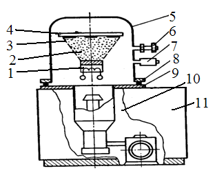
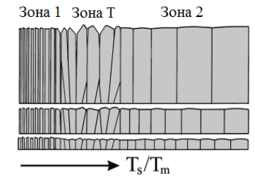
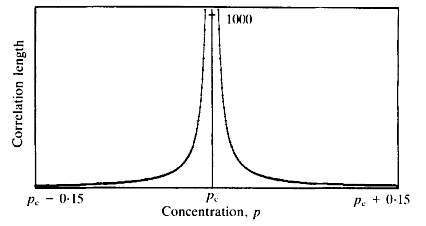

РОЗДІЛ 1. ФІЗИЧНІ ОСНОВИ ТА УМОВИ ВАКУУМНОГО НАПИЛЕННЯ
1.1 ФІЗИЧНІ ОСНОВИ ВАКУУМНОГО НАПИЛЕННЯ
Процес нанесення тонких плівок у вакуумі полягає в генерації потоку частинок, спрямованого в бік підкладки, і подальшої їх конденсації з утворенням тонкоплівкових шарів на поверхні, що покривається.
При нанесенні тонких плівок одночасно протікають три основних процеси: генерація направленого потоку частинок осаджуваної речовини; проліт частинок у розрідженому (вакуумному) просторі від їх джерела до поверхніпідкладки; осадження (конденсація) частинок на поверхні з утворенням тонкоплівкових шарів.

Типова установка нанесення тонких плівок у вакуумі (рис. 1.1.) має каркас 11 на якому змонтовані вакуумна робоча камера 5 з джерелом 1, що наноситься, підкладкотримачем 4 з підкладками 3, а також вакуумна система 10. Системи електроживлення та управління установкою, як правило, розташовані в окремих шафах (стійках).
Робоча вакуумна камера 5 являє собою циліндричний ковпак з нержавіючої сталі, який може підніматися вгору для доступу до підковпачних елементів вакуумної системи. У опущеному стані ковпак герметизується на базовій плиті 9 ущільнюючою кільцевою прокладкою 8 з вакуумної гуми.Кран 6 служить для напуску в камеру повітря, а датчик 7 – для вимірювання вакууму в її робочому просторі. Над джерелом 1 з якого генерується потік 2 частинок матеріалу, що наноситься, розташований підкладко тримач 4, на якому кріпляться підкладки 3 з необхідною орієнтацією. Системавакуумних насосів кріпиться до отвору в базовій плиті та призначена для відкачування робочої камери ... (там далі ще купа тексту)
1.2 ВАКУУМНІ УМОВИ
У фізиці та техніці поняття «вакуум» визначається як стан газу, при якому його тиск нижчий від атмосферного. У залежності від величини тиску газу ступінь вакууму характеризується такими якісними поняттями: високий, середній та низький вакуум. Високий вакуум (10^(-3)÷10^(-7)) мм.рт.ст. відповідає тій ступені розрідження газу, при якому довжина вільного пробігу молекул чи атомів газу перевищує геометричні розміри посудини, у якій досягнуте таке розрідження. При середньому вакуумі (10^0÷10^(-3)) мм.рт.ст., який ще називають форвакуумом, довжина вільного пробігу молекул газу близька до розмірів такого об'єму, а при низькому вакуумі (10^3÷10^0) мм.рт.ст.– суттєво менша від йот розмірів. Кількісною характеристикою вакууму є тиск газу р, який однаковий у всіх точках об'єму тавизначається силою, з якою газ тисне на одиницю площі стінок будь якої поверхні приладу. З молекулярно-кінетичної теорії (МКТ) відомо, що довжина вільного пробігу молекул однокомпонентного за складом газу пов'язана із тиском газу р і його температурою Т співвідношенням:
λ=(kT^2)/(√2 πpd_m^2 (T+const))
де d_m – діаметр молекули газу. Тому зручно ступінь вакууму виражати тиском газу в об’ємі [10].
РОЗДІЛ 2. ОСОБЛИВОСТІ ФОРМУВАННЯ ТОНКИХ ПЛІВОК
2.1 МЕХАНІЗМИ РОСТУ
Одним з основних питань вивчення тонких плівок є встановлення взаємозв'язку між мікроструктурою, елементним складом і фізичними властивостями плівок. Тому дослідження закономірностей росту плівок і формування їх мікроструктури має велике значення.
Відомо, що плівки можуть бути аморфними, монокристалічними і полікристалічний. Для аморфних плівок характерна відсутність дальнього порядку в розташуванні атомів, властивого кристалічному стану. Монокристалічні плівки утворюються при епітаксії. Епітаксіальна плівка відтворює кристалічну структуру підкладки. Полікристалічні плівки демонструють найбільшу різноманітність мікроструктури, яка характеризується розміром і кристалографічною орієнтацією кристалітів (зерен). Кристалічні решітки сусідніх зерен розорієнтовані між собою, що обумовлює наявність границь між ними. Розмір зерен в полікристалічної плівці може змінюватися, наприклад, при термообробці і механічних деформаціях часто спостерігається зростання зерен. Цей процес призводить до зміни мікроструктури плівки і значно впливає на механічні та інші властивості плівки.
Виділяють три основні механізми росту плівок [3, 4]:
- острівцевий, або механізм Вольмера - Вебера;
- пошаровий, або механізм Франка – Ван-дер-Мерве;
- змішаний, або механізм Странського – Крастанова.
Острівцевий механізм росту плівок реалізується на атомно-гладких поверхнях, таких як щільно упаковані грані монокристала з малими індексами Міллера. Острівцевий ріст плівок здійснюється за умови, що атоми плівки сильніше пов'язані між собою, ніж з підкладкою. Ріст плівок починається з адсорбції частинок з газової або рідкої фази на поверхні підкладки. Адсорбовані атоми в результаті дифузії стикаються і утворюють кластери. Метастабільні кластери утворюють так звані критичні зародки. За рахунок адсорбції атомів йде процес зростання зародків з утворенням острівців.
2.2 МІКРОСТРУКТУРИ ПЛІВОК
Розуміння закономірностей еволюції мікроструктури полікристалічних плівок має велике значення для отримання плівок із заданими властивостями. Формування зернистої мікроструктури починається вже при осадженні плівки і триває при її термічній обробці. Еволюція мікроструктури полягає не тільки в рості кристалітів в плівці, а й у зміні кристалографічної орієнтації зерен.
Ріст зерен зазвичай відбувається за допомогою міграції границь і їх злиття. Ці процеси призводять до збільшення середнього розміру зерен і зменшення числа зерен в полікристалі. Ріст зерен за допомогою міграції і злиття границь розглядається як основний механізм росту в крупнозернистих полікристалах. Однак можливий альтернативний механізм, пов'язаний з поворотами кристалічної гратки в зернах, що приводить до зникнення границь і злиття сусідніх зерен. Хоча цей альтернативний механізм не працює ефективно в крупнозернистих полікристалах, він здатний внести істотний внесок в ріст зерен в тонких плівках, в яких умови для протікання процесів повороту кристалічної решітки істотно «м'якша» у порівнянні з такими в звичайних полікристалах.
Умови осадження плівки істотно впливають на її мікроструктуру. Важливим параметром є фактор Ts/Tm, рівний відношенню температури осадження, або температури підкладки Ts, до температури плавлення матеріалу плівки Tm [6]. На підставі багаточисленних експериментів і аналізу морфології однокомпонентних плівок, осаджених вакуумними методами, була побудована модель формування структури плівки в залежності від температури осадження. В рамках моделі поділяють низькотемпературну (зона 1), високотемпературну (зона 2) і проміжну зони (зона Т), як проілюстровано на рис. 2.2. При низьких температурах (Ts/Tm < 0.3) поверхнева дифузія адсорбуючих атомів практично відсутня, в результаті утворюється безліч зародків з випадковою орієнтацією, які ростуть рівномірно (у всіх напрямках) до змикання один з одним, а після змикання протікає анізотропне зростання, в результаті чого формуються плівки з пористо-стовбчастою структурою. Стовпці зазвичай являють собою не єдине зерно, а безліч зрощених зерен з однаковою орієнтацією, або є аморфними.
При більш високих температурах (0.3 < Ts/Tm < 0.5) окремі зародкові острівці внаслідок дифузії зливаються в більші, далі протікає їх незалежний зростання. В результаті утворюються кристалітів більшого діаметру, ніж в низькотемпературної області, з випадковою орієнтацією або зі слабо вираженою текстурою. Зі збільшенням товщини плівки спостерігається тенденція до розвитку текстури в результаті переважного зростання кристалітів з певною орієнтацією. Плівки мають розвинену стовпчасту мікроструктуру з відносно невеликою кількістю пор уздовж кордонів зерен. На поверхні зерна мають ограновування, тому в цій області шорсткість плівки порівняно висока.
У високотемпературної області (Ts/Tm > 0.5) стає істотною об'ємна дифузія. Міграція кордонів зерен протікає як на стадії злиття окремих острівців на початковому етапі росту плівки, так і протягом усього процесу осадження. Переважна орієнтація зростання зерен спостерігається вже на стадії злиття острівців. Плівки, обложені при високих температурах, мають щільну зернисту стовпчасту структуру, діаметр зерна збільшується з ростом температури.

РОЗДІЛ 3. ТЕОРІЯ ПЕРКОЛЯЦІЇ
Для полегшення сприйняття матеріалу про структури ультра тонких плівок розглянемо основи теорії перколяції, яка потрібна для інтерпретації отриманих в практичній частині результатів
3.1 ПОНЯТТЯ ПЕРКОЛЯЦІЇ
Теорія перколяції має справу з дуже простими моделями невпорядкованих систем.
На рисунку 3.1. зображено серію кінцевих (50х50) квадратних ґраток, ділянки яких (зображені квадратами на рисунку 3.1. ) можуть знаходитись в двох станах, які мають назви «зайнятий» (чорні квадрати) і «вільний» (білі квадрати). Кожен випадковий квадрат може бути зайнятим (не залежить від стану інших) з імовірністю р або вільним з імовірністю 1-р. Група зайнятих квадратів, зв’язаних найменшими відстанями між собою має назву перколяційний кластер. Якщо р є малим (наприклад, р=0,1), більш зайняті місця є ізольованими від маленьких кластерів (Рисунок 3.1. (а)). Якщо р збільшується, більшає і величина кластерів, починає з’являтись комплекс неправильної форми (Рисунок 3.1. (б)-(д)) і для деякого значення р кластер зростається в єдине ціле (Рисунок 3.1. (д),(ф)). В обмеженні нескінченної граки таке значення р називають перколяційним порогом, при якому неперервний кластер зумовлює провідність з кінцевою імовірністю.
Поріг перколяції - це точка, що знаходиться між непровідним (неперервного кластера немає) і провідним станами (неперервний кластер існує), при якій властивості перколяційної системи несподівано змінюються при підвищенні р (перколяційний фазовий перехід, який єфазовим переходом другого роду). При р>рс неперервний кластер починає приєднувати до себе менші кластери.

3.2 КОРЕЛЯЦІЙНА ДОВЖИНА
Найбільш важливою кількісною перколяційною характеристикою з практичної точки зору є кореляційна довжина ε, яка, грубо кажучи, є середнім розміром перколяційних кластерів разом з типовим розміром великих незайнятих ділянок поблизу неперервного кластера вище порогу протіканняpc. Як тільки поріг перколяції буде перетнуто, то великі кластери почнуть приєднуватись один до одного та ставати все більшими і більшими і, як наслідок кореляційна довжина почне змінюватись за законом
ε~|p-p_c |^(-v)

3.3 ПЕРКУЛЯЦІЙНИЙ ПОРІГ
Принциповою особливістю всіх перколяційних моделей є існування порогу протікання, на якому майже всі властивості системи несподівано змінюються внаслідок утворення неперервного кластера (так званої дальньої провідності). Перший приклад такої поведінки (існування неперервного кластера) походить від вивчення пружних поверхневих хвиль в тонких плівках золота та NaCl. Пружна хвиля, що поширюється через тонку металеву плівку зумовлює діелектричну неоднорідність поверхні, від якої світло може бути розсіяним. Цей процес супроводжується виникненням або поглинанням фонона і відповідним зсувом частоти розсіяного світла (так зване розсіяння Брілюена). В тонких металевих плівках на діелектричній підкладці, розсіяння світла проходить переважно в плівці і, відповідно, спектр частот розсіяного світла (рисунок 3.4), дає можливість отримати інформацію про пружні властивості плівки, тому що спостережувані піки відповідають різному типу пружної поверхні (Сандеркок 1982).. Автори обговорили можливість пояснення цієї знахідки і стверджують, що нова еластична мода (відмічена стрілками на малюнку 3.4) зумовлена внутрішніми еластичними модами кінцевих кластерів. Той факт, що ці моди з’являються несподівано на порозі протікання було підтверджено електронною мікрофотографією досліджуваних плівок.